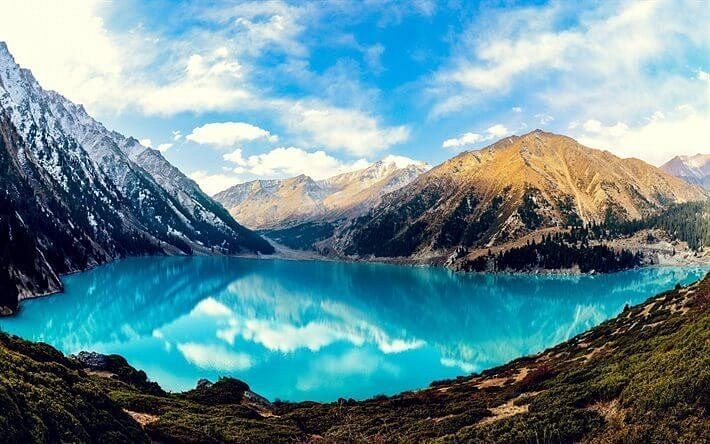
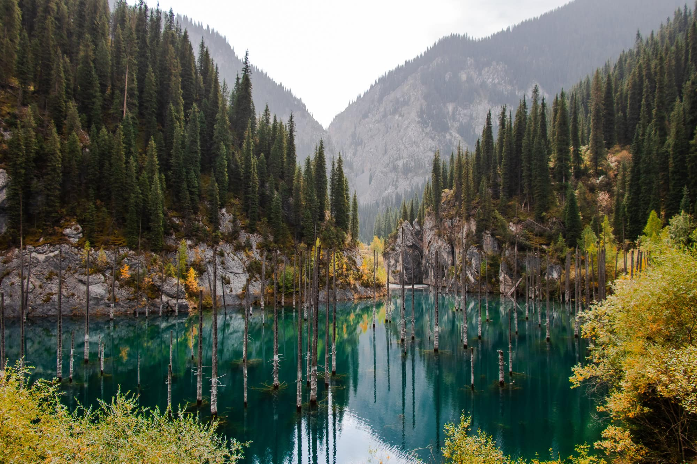
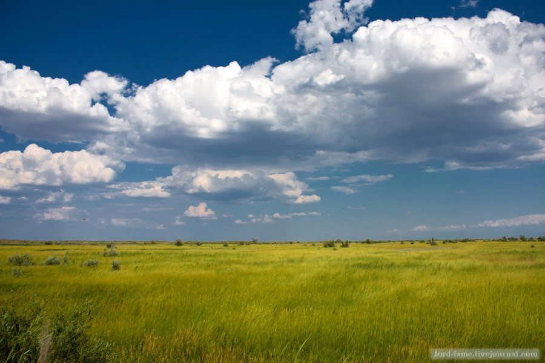
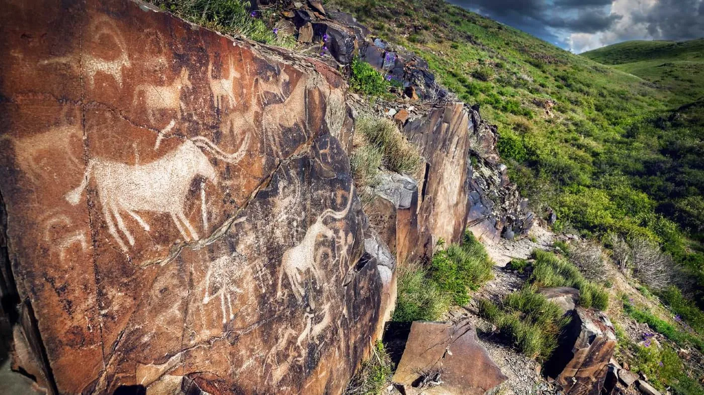
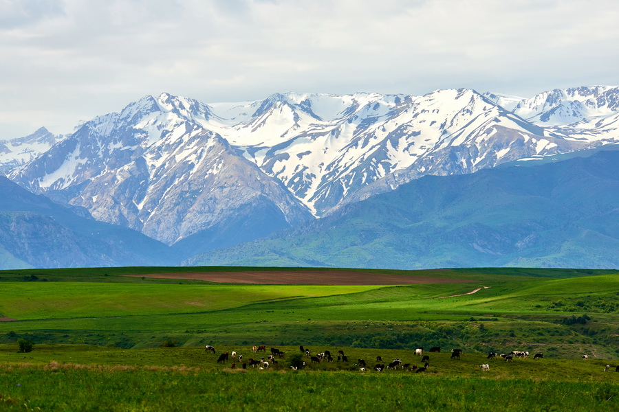

Beautiful Places of Kazakhstan
Kazakhstan has many national parks with different landscapes and wildlife. These places help protect nature and rare animals.
Charyn National Park

About the Park
Charyn National Park is located in the southeastern part of Kazakhstan. It is especially famous for the Charyn Canyon.
The park has unusual rocks, mountains and other beautiful natural landscapes.
Interesting Places
- Charyn Canyon
- Red rock formations
- Mountain landscapes
- Natural valleys
Altyn-Emel National Park

About the Park
Altyn-Emel National Park is a large protected area in southeastern Kazakhstan.
The park is known for its deserts, mountains and different species of wild animals.
What Can Be Found There?
- Wild animals
- Desert landscapes
- Mountains
- Unique natural places
Why Protect National Parks?
National parks are important because they give animals a safe place to live and protect natural environments.
- Protect animals and plants.
- Save natural landscapes.
- Protect rare species.
- Support ecological tourism.
- Help people learn about nature.
Natural Areas in Kazakhstan
Main Types of Nature
- Mountains
- Steppes
- Deserts
- Forests
- Canyons
Every natural area has its own plants and animals. This makes Kazakhstan's wildlife very diverse.
National Parks Gallery
Charyn Canyon
Altyn-Emel

Burabay

Ile-Alatau

Kaindy Lake

Kolsai Lakes

Kazakhstan Steppe

Tamgaly

Aksu-Zhabagly